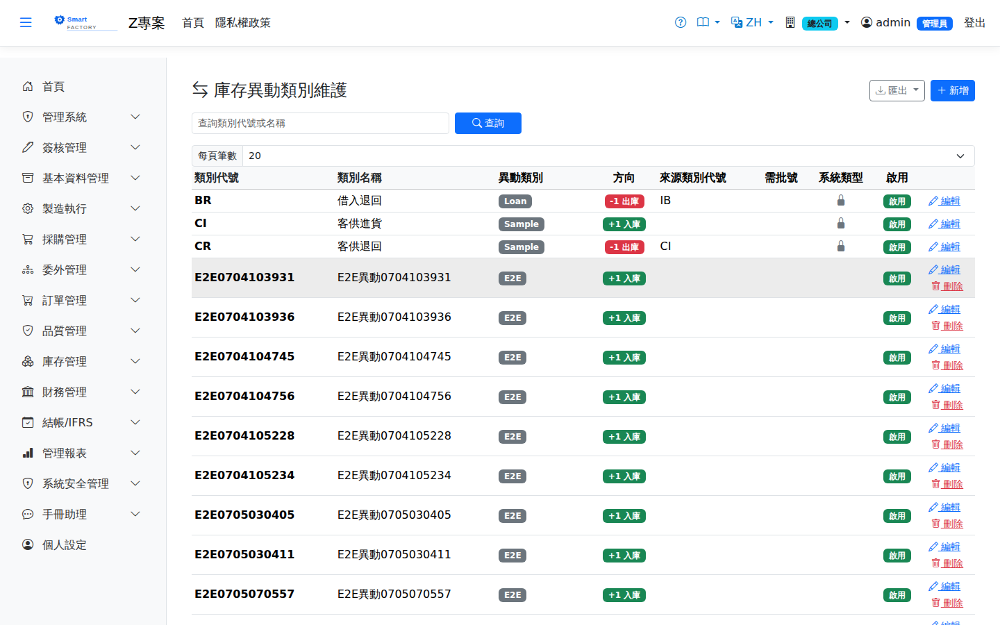

庫存異動類型Inventory Transaction Type
路由：/BAS/InventoryTransactionType | 庫存入出異動的類型代碼維護Route: /BAS/InventoryTransactionType | Type codes for stock in and out movements
庫存異動類型定義所有庫存變動的種類標籤（如採購進貨、生產領料、報廢出庫），每筆庫存異動記錄必須標記一個異動類型，供後續統計分析與查詢過濾使用。Inventory transaction types are the labels for every stock movement (goods receipt, material issue, scrap issue, …). Every inventory record must carry one type, which is then used for analysis and query filtering.

庫存異動類型畫面截圖（示意，實際欄位/資料依權限與查詢條件而異）Inventory transaction type screenshot (illustrative; actual fields and data vary by permission and query criteria)
欄位說明Field reference
| 欄位名稱Field | 必填Required | 說明Guide |
|---|---|---|
| 類型代碼Type Code | 必填Required | 唯一識別碼（例：GR = 採購進貨、IS = 領料出庫、SCRAP = 報廢）Unique code (e.g. GR = goods receipt, IS = material issue, SCRAP = scrap) |
| 類型名稱Type Name | 必填Required | 完整名稱（例：採購進貨、生產領料、報廢出庫）Full name (e.g. goods receipt, material issue, scrap issue) |
| 方向Direction | 必填Required | 入庫（＋）In (+)或 or 出庫（－）Out (−)：決定此類型是增加還是減少庫存: decides whether this type increases or decreases stock |
| 是否系統型別System Type | 系統預設的異動類型（唯讀，無法刪除或停用）Transaction type shipped with the system (read-only, cannot be deleted or deactivated) | |
| 需批號Lot Required | 勾選後，此類型的異動單必須填批號才能過帳Once checked, transactions of this type must carry a lot number before they can be posted | |
| 需參考單號Source Document Required | 勾選後，此類型的異動需關聯來源單據單號（如採購單號）Once checked, transactions of this type must reference a source document number (e.g. a purchase order number) | |
| 是否啟用Active | 停用後不可在倉庫異動單中選取Once inactive, cannot be selected on inventory transaction documents |
方向說明Direction
入庫（方向 = 入，＋）Receipt (direction = In, +)
- 採購進貨（GR）Goods receipt (GR)
- 生產完工入庫（FG）Production put-away (FG)
- 盤點盈（INV+）Count gain (INV+)
- 退貨回倉（RTV）Return to vendor (RTV)
出庫（方向 = 出，－）Issue (direction = Out, −)
- 生產領料（IS）Material issue (IS)
- 報廢出庫（SCRAP）Scrap issue (SCRAP)
- 銷貨出庫（SHIP）Sales issue (SHIP)
- 盤點虧（INV-）Count loss (INV-)
操作步驟Steps
1
進入「基本資料 > 庫存異動類型」，點「新增」。Go to "Basic Data > Inventory Transaction Type" and click "Add".
2
填入類型代碼、名稱，選擇方向（入庫或出庫）。Enter the type code and name, then pick the direction (in or out).
3
依需求勾選「需批號」或「需參考單號」。Check "Lot Required" or "Source Document Required" as needed.
4
點「儲存」完成新增。Click "Save" to finish.
注意：Note:系統型別（IsSystemType = 是）的異動類型為系統核心流程所用，請勿修改或停用，否則可能影響採購進貨、生產投料等核心功能。 Transaction types flagged as system types (IsSystemType = Yes) are used by core processes. Do not modify or deactivate them, or goods receipt, material issue and other core functions may break.
自訂異動類型用於手工調整、特殊補料等非標準作業。建議搭配「需參考單號」確保每筆異動可追溯來源。Custom transaction types cover manual adjustments, special replenishment and other non-standard work. Pair them with "Source Document Required" so every transaction stays traceable.